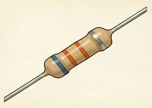
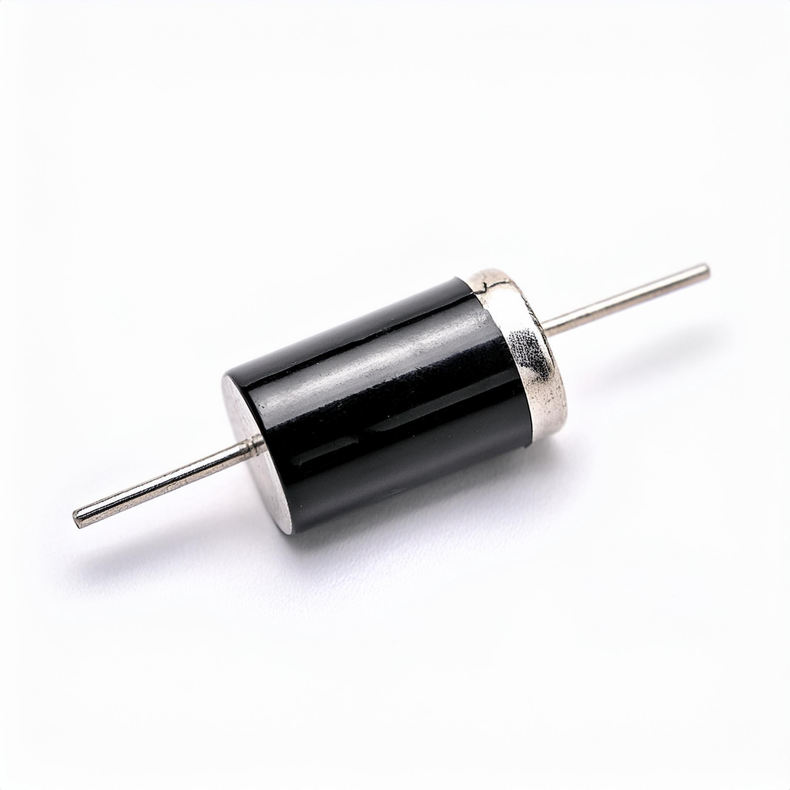
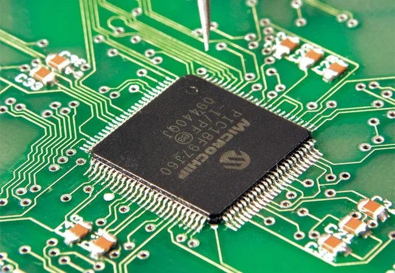
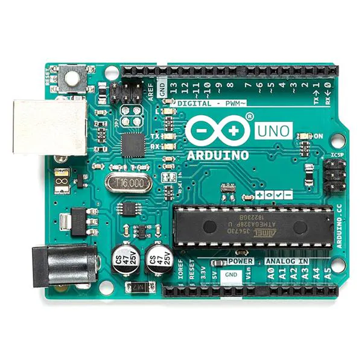

Una resistencia (o resistor) es un componente electrónico pasivo que se opone y dificulta el flujo de la corriente eléctrica en un circuito.
.jpg)
Un capacitor o condensador es un componente electrónico pasivo que sirve para almacenar energía eléctrica de forma temporal mediante un campo eléctrico.

Un diodo es un componente electrónico semiconductor que actúa como un interruptor unidireccional, permitiendo que la corriente eléctrica fluya en una sola dirección y bloqueándola en sentido contrario.
.jpg)
Un transistor es un dispositivo semiconductor que se usa para controlar, amplificar o interrumpir el flujo de corriente eléctrica en un circuito. Es uno de los componentes fundamentales en la electrónica moderna.

Un circuito integrado (CI), también llamado chip o microchip, es una pequeña pastilla de material semiconductor —generalmente silicio— que contiene miles o millones de componentes electrónicos como transistores, diodos y resistencias en miniatura.

Arduino es una plataforma de creación de electrónica de código abierto que funciona como una pequeña computadora programable para conectar el mundo físico con el digital.